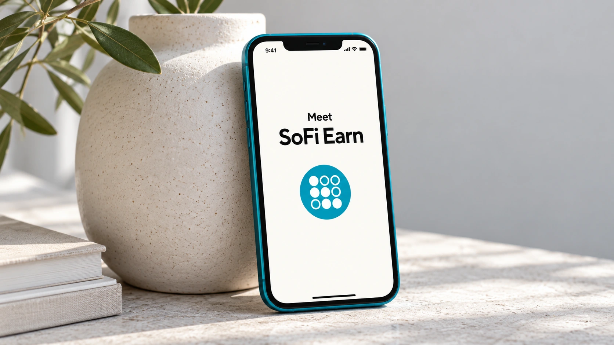

SoFi launches a 4.40% tokenized deposit with a bridge to crypto
SoFi Earn represents bank deposits, while conversion to SoFiUSD moves funds into a different product. The insurance boundary matters as much as the rate.

SoFi launched SoFi Earn on October 22, offering consumers a tokenized bank deposit with a stated variable annual percentage yield of 4.40%. The product links an interest-bearing deposit to a route into digital assets, putting the distinction between a bank balance and a stablecoin at the center of the offer.
The company says each SoFi Earn token, identified as SOFIE, represents one dollar deposited at SoFi Bank, N.A. The advertised rate was current as of October 20 and can change. There is no minimum balance, according to the launch announcement. Access is rolling out through November, so the announcement does not mean all customers can use it immediately.
Two tokens with different financial roles
SOFIE is a bank deposit representation, separate from the company’s SoFiUSD stablecoin. SoFi describes a one-for-one conversion route into SoFiUSD, after which customers can use the crypto app or transfer the stablecoin to supported external wallets. The deposit product and the transferable stablecoin should therefore be evaluated separately, despite sharing an issuer’s brand.
The attraction is a shorter path between holding money in a yield-bearing account and putting it to use in digital-asset transactions. A customer could leave funds in the deposit product until needed, then convert them. That is an explanation of the proposed workflow, rather than a claim that every transfer will be instant, free or supported on every blockchain.
The rate is variable, rather than a fixed commitment for a specified term, and fees may reduce earnings. Annual percentage yield also expresses an annualized measure; it is not a promise that someone holding the product for a few days will receive 4.40% of the opening balance. The rate, holding period and applicable terms all affect the actual result.
Deposit insurance has an aggregation rule
SoFi says the deposit is eligible for FDIC insurance subject to the applicable rules and limits. The standard limit is $250,000 per depositor, per insured bank, per ownership category. This is not automatically a fresh $250,000 allowance for every app feature or separately named product a customer opens at the same institution.
The FDIC explains that deposits held in the same ownership category at the same insured bank are added together when determining coverage. An existing balance at SoFi Bank can therefore matter when evaluating a new SOFIE balance. The relevant question is the combined eligible deposit amount and its ownership category, rather than the number of account labels.
For example, consider a single owner with $200,000 in one eligible deposit and $100,000 in another at the same insured bank, both in the same ownership category. The combined amount is $300,000 against the standard $250,000 limit. Calling the second balance a token does not by itself change that arithmetic. Different ownership categories have their own requirements.
The conversion changes what the customer holds
Deposit insurance does not follow funds into a stablecoin or another cryptoasset merely because the conversion began inside a bank-branded app. A depositor’s claim on a bank and ownership of a digital token are different financial positions. Before converting, the important details include redemption rights, transfer restrictions, supported networks and which entity owes the customer money.
Our guide to stablecoins and depeg risk explains why a dollar reference does not make every instrument equivalent to an insured dollar deposit. Meanwhile, the new stablecoin regulatory framework concerns payment-token obligations; readers should not assume those obligations replace the deposit-insurance rules that apply on the banking side.
The launch’s significance is the connection between those two environments. Its success will depend on whether customers find the conversion route useful and understand when their exposure changes. The next evidence to watch is the actual rollout, the product’s evolving rate and transaction terms, and any disclosure of usage. A launch announcement alone cannot establish demand or the profitability of the new service.
Sources and methodology
Sources checked October 22, 2026. Reported findings and company or regulatory statements are attributed in the text; discussion of financial implications is editorial analysis. The generated cover is illustrative.